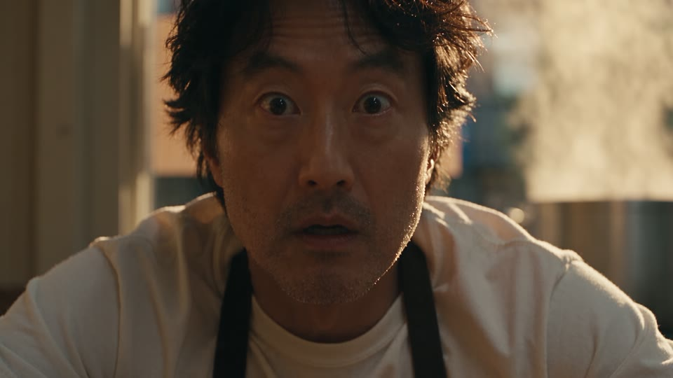
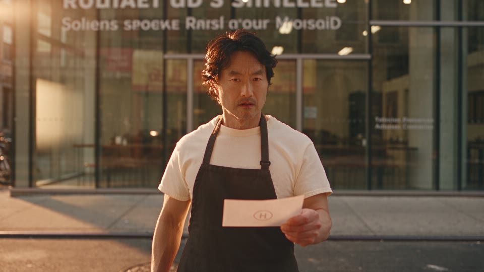

FEATURED FILM
日落之前，
面馆能等来 1,000 位顾客吗？
老板接下限时挑战，却发现好吃并不等于有人知道。街头招揽与传统广告路径接连受阻，直到他用更直接的方式说清目标、启动投放。影片用倒计时、连续失败和最终排队的回报，把“付费广告变简单”写成一场人物行动，而不是功能说明。
你好，我是李晓慧。聚焦 AI 视频创意与叙事策划，也有从零搭建内容增长体系的实战经验。我从受众、人物和冲突出发，让品牌表达既有故事，也能被理解和传播。
四种品牌叙事切口：人物困境、团队冲突、传播概念与剧情转化。点击画面直接播放。
从故事命题到可观看的完整成片
老板接下限时挑战，却发现好吃并不等于有人知道。街头招揽与传统广告路径接连受阻，直到他用更直接的方式说清目标、启动投放。影片用倒计时、连续失败和最终排队的回报，把“付费广告变简单”写成一场人物行动，而不是功能说明。
一家洗发水公司只剩十分钟寻找新顾客：传统方案专业却太慢，盲目上线的 AI 广告又因缺少审核闹出客户投诉。两场面试的反差，带出品牌对投放速度与判断力的双重要求。
把产品、媒介等岗位放进同一场增长会议，借角色对话和轮流发言拆开团队的真实分工。最后将策略、创意、投放与衡量并列，收束为一个完整的增长命题。
以不同时代的吸引注意方式为视觉线索：现场表演、招牌复制、城市大屏。影片从“让更多人看见”的历史感，转向今天更精准、更有效的增长表达。
用生活场景、反差和第一视角切入，按真实画幅展示不同创意版本。
移动端优先的短时长创意
职业与收入话题的情境切入。
关系情节与意外回应。
从强冲突开场制造反差。
人物关系中的即时冲突。
用生活方式画面引出薪资命题。
以新手炒股的第一视角，把陌生的投资术语变成笑点；通过听不懂“黑话”的反差引出信息门槛。
用游戏化角色和 Resume、Copilot、Offer 三个选项，把求职工具能力变成直观的互动选择。
用一人分饰的反应与猜盲盒式情境，放大投资决策前缺少信息的荒诞感。
从音乐驱动的视觉生成，到替代传统视频团队的内容生产场景。
从创作者在桌前制作音乐出发，跟随同一首歌切换霓虹城市、插画等截然不同的视觉世界。用连续变换的画风呈现 Pixo 将音乐延展成多种视频表达的可能。
从独自制作视频的压力切入，转向快速产出适合 TikTok 的内容场景。把“视频团队”这个传统制作成本，转译为创作者可以直接上手的产品价值。
一个项目如何从抽象命题进入人物、结构和可制作的镜头。
老板必须在日落前招来 1,000 位顾客。他相信面好吃就会有人来，促销、喊话和街头表演却都没用；隔壁店因广告排起长队，他才意识到问题不是产品，而是没人看见。代理公司流程又赶不上今天，故事由此引出更轻量的投放方式。


用明确的倒计时和连续失败建立节奏，产品在角色真正需要它时出现。
限时任务落下；老板以为好产品自然会被发现，路人却径直走过。
促销和表演快剪升级，隔壁排队的人群揭示“他们看过广告”。
代理公司的冗长流程与“今天就要顾客”的需求产生荒诞冲突。
老板用一句话说明目标；投放启动、顾客涌入，挑战完成与品牌收束同场完成。
35 秒为早期脚本目标；制作阶段的 73 秒粗剪用于展示过程，上方播放的是约 75 秒成片。
项目资料保留了从时间线脚本到生成片段、备选镜头及剪辑反馈的过程。
把“广告投放简单”转为限时挑战、错误尝试和认知转折，而非产品口播。
将多次失败写为 montage，代理段改用快速对白，结尾将挑战完成与品牌字卡叠合。
按挑战、街头自救、竞品排队、代理受阻、手机投放与回报生成主要片段。
保留人群、时钟、代理入口和手机等替代镜头，供角色动作或场景衔接不顺时替换。
针对转身硬切、店招混淆、空间跳跃和错误 AI 文字，指定替换、遮盖与后期品牌包装。
从受众的具体问题出发，设计让人愿意停下的内容、产品能够接住的下一步，再用真实行动反馈迭代。
为 FinalRound AI 探索国内市场，从面试焦虑、求职场景和实用话题切入，搭建官方小红书账号的选题方向。约两个月积累 4,000+ 高活跃垂直关注者，并参与 X / Threads 内容测试。
0–1 冷启 · 场景选题 · 约两个月 4,000+ 关注者面向职业女性与都市情感人群，独立冷启两个不同人设账号，一周内均达到千粉规模。测试高学历恋爱故事、择偶观点和人物观察等方向，沉淀提问开场、反转金句与情绪 CTA 模板；项目资料记录爆款率最高 30%+、每周内容 15+、月均下载转化 1,000+。
双账号冷启 · 爆款结构 · 内容到下载转化为交易平台及 AI 投资产品规划品牌、投研、创始人和素人账号的不同职责，统筹 10+ 账号节奏与团队每周 40+ 篇内容交付。30+ 条财经热点内容累计播放破 200 万，创始人 IP 双月涨粉 6,000+。
矩阵定位 · 热点内容 · 创始人 IP围绕语音交易、组合推荐、AI 盯盘等产品卖点测试表达方式，区分浏览、互动、点击与下载等不同指标。把有效选题结构和用户反馈整理给产品团队，用于后续功能沟通与内容迭代。
卖点测试 · 分层指标 · 产品反馈结合一家教育产品团队的现有运营情况与赛道特点，拆分站外家长发现、站内孩子使用和家长决策的不同环节。围绕选题入口、软广承接、热点借势和测试复盘设计定制培训案例，现场针对实际问题答疑，给出下一轮内容测试方向。
现状分析 · 定制培训 · 案例答疑从目标、内容判断、执行与结果四个角度，展示不同项目的增长路径。
国内市场探索 · 2025
从“AI 求职工具”转向用户每天真实遭遇的面试和求职场景。
为 FinalRound AI 验证国内市场的内容获客路径，找到能持续触达目标人群的账号表达。
先讲求职者熟悉的焦虑、场景和冲突，再让产品能力进入解决问题的过程。
搭建官方小红书账号定位与选题方向，测试高互动内容，沉淀目标用户话题；同时参与 X / Threads 的内容表达测试。
约两个月累计获得 4,000+ 高活跃垂直关注者，为后续内容和产品方向提供反馈。
账号冷启与爆款生产 · 2023–2025
用具体人物关系与观点反转，为高学历女性社交产品建立内容引流路径。
面向职业女性和都市情感人群，建立不同人设的内容账号，验证从阅读、互动到下载的转化。
以高学历恋爱故事、女主角式择偶观点和精英男性群像观察替代泛泛的恋爱建议；用情节细节建立代入，再用观点引发讨论。
独立冷启两个账号，持续测试选题与转化方向；沉淀“提问式开头 + 反转金句 + 情绪 CTA”结构，每周产出 15+ 条内容，并带教 3 位新成员。
两个账号一周内均达到千粉规模；项目资料记录爆款率最高 30%+，月均下载转化 1,000+。
AI 金融产品 · 2025
让不同账号承担不同表达任务，而不是把同一篇内容复制到每个号。
为交易平台与 AI 投资产品建立品牌、投研、创始人和素人内容的协同机制。
用热点内容获得发现，用专业解释建立信任，用创始人观点和产品场景延续关系。
统筹 10+ 账号的定位与节奏，带领团队每周交付 40+ 篇内容；围绕财经热点、产品卖点和创始人经历设计栏目。
30+ 条热点内容累计播放破 200 万，单条最高 43 万+；创始人 IP 双月涨粉 6,000+，单篇点击 20 万+。
跨项目的方法沉淀
不只展示“爆了什么”，还展示选题判断如何变成下一轮更好的内容。
对照受众情绪、平台语境和热点窗口，拆解第一屏的信息与停留理由。
FRAI 关注垂直关注者，她说关注下载转化，RockFlow 区分播放、点击与互动；每个项目用适合其目标的指标衡量。
将高表现内容的开头、人物与卖点拆成可复用模板，再用用户反馈调整下一轮选题和产品沟通。
我的工作横跨创意策划、脚本写作和内容增长。做视频时，我会先问：观众为什么继续看？人物想要什么？下一段新增了什么信息？再把故事压缩成可制作的镜头和台词。
熟悉 AI 辅助的创意发散、分镜预演与多版本迭代，也重视与制作团队对齐角色、场景、声音和节奏。此前的增长工作让我更关注作品最终如何触达受众。
欢迎交流 AI 视频创意、品牌叙事、剧情脚本与内容增长合作。